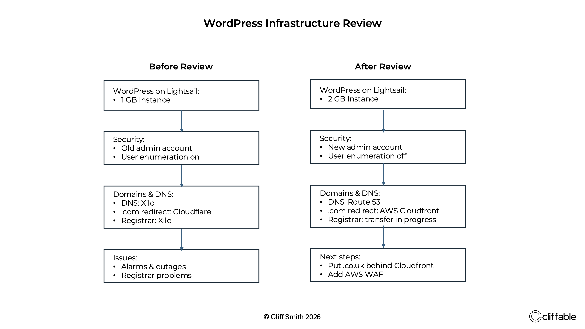

Published 12 June 2026
A WordPress Infrastructure Review
A security alert prompted a wider review of my WordPress infrastructure, leading to improvements across server configuration, domain management, DNS architecture and operational security.
Read note →